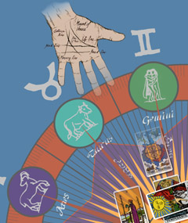
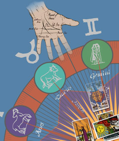

El salón estaba ocupado (triste y) mayormente por mujeres. Mi vista y mi olfato confirmaban un nivel económico acomodado y mis oídos capturaban diálogos que proclamaban nuevas creencias (casi todas incluían la palabra “dosha”). Mi prima, quien me había arrastrado hasta allí, llevaba con ella uno de sus libros. Como aficionada a la lectura de autoayuda y todo aquello que los escépticos agrupamos en el neologismo conocido como pseudociencia, aquella joven mujer aseguraba que escucharlo hablar me convencería de todo lo que para ella era “verdadero”. Una afirmación que me ponía los pelos de punta; ya de entrada pensaba que me iba a arrepentir…nada inusual en mí.
Cuando la presencia del gurú de la mecánica cuántica y la medicina alternativa (anoten el oxímoron) era inminente porque las luces disminuyeron su intensidad y la repetitiva música de fondo cesó de molestar, escuché a una mujer de unos cuarenta años “susurrar” a todos a su alrededor que ya sentía la presencia del “maestro”. En ese momento deseé pedirle a su tercer ojo que le echara un vistazo a mi carro pues no me sentía cómoda con el lugar donde lo había parqueado, pero no quise arruinarle el drama.
Aquellos eran mis terrenales pensamientos cuando hizo su entrada Deepak Chopra, médico con raíces hindúes radicado en Estados Unidos, quien ha construido un pequeño imperio basado en algo que, obviamente, desconoce; un elemento que, por cierto, compartimos el señor y yo.
Donde nos desviamos por completo es en su interpretación de lo que se desconoce sobre la mecánica cuántica. Por un lado, no puedo siquiera considerarme ignorante sobre el tema porque los más grandes han proclamado ignorancia también. No obstante, lo que he podido concluir de mis lecturas me asegura que el mundo subatómico tardará mucho más en revelar sus respuestas.

Mientras tanto, el señor Chopra, como muchos otros antes que él, se aprovecha de lo todavía desconocido para atribuirle poderes irrazonables. Mientras los verdaderos hombres de ciencia estudian y actúan sobre decenas y decenas de teorías y experimentos en gigantescos laboratorios como el CERN para explicar, por ejemplo, el colapso de la onda dentro de la dualidad subatómica o por qué el famoso gato de Schrödinger está vivo y muerto antes de que abramos la caja, personas como Chopra forman teorías ridículas sobre una ciencia joven y dinámica donde aún subsiste un inimaginable camino por recorrer.
Bien lo dijo el gurú de la Cienciología, L. Ron Hubbard, el mejor negocio es inventar una religión, o algo por el estilo; siempre habrá gente desencantada con sus dogmas y necesitada de adoptar otros nuevos.
Chopra ha ideado, además, términos derivados de sus ideas como el “remedio cuántico” (quantic healing), dos palabras que unidas no gozan de sentido alguno dentro de la física. El doctor afirma que todo es una ilusión, hasta la enfermedad y el envejecimiento. Para él, el mundo está dictado por nuestras mentes y, como tal, es posible que lo manipulemos y alcancemos lo que realmente deseamos, elementos que ha denominado: “un cuerpo sin edad” y “una mente atemporal”. Como es característico en todas las religiones, Chopra nos pone (al Homo sapiens) en el centro de la materia que estructura al mundo. ¡Nuevamente ese egocéntrico esplendor!
Pero el hombre ya da señales de envejecimiento. Muestra su edad. No encuentro en su persona al profeta que ha dominado su mundo mediante el control mental, es más bien un tipo perspicaz que sabe cómo vender esta nueva versión de lo sobrenatural a personas como las que me rodean, ávidas de creer en algo fuera de iglesias pasadas de moda y con muchos pecados que esconder; entes deseosos de embarcarse en un juego con la pseudociencia que justifique las lecturas del Tarot, la numerología, los horóscopos, las regresiones, las abducciones alienígenas y quizá, hasta el silencio de sus dioses.
La necesidad de creer es tan grande que saltamos de un lado a otro buscando distintas formas de confirmarnos y evidenciarnos dentro del Universo, necesitamos, al parecer, descubrir objetivos humanos en un Cosmos que nos resta cada vez más y más importancia. Un aspecto que ante mis ojos nos hace maravillosamente sorprendentes.
Pero somos una especie ególatra. Desde que desarrollamos la capacidad de pensar en abstracciones nos acostumbramos a explicar lo desconocido con impresionantes historias donde somos el centro de todo, donde superhéroes y personajes fantásticos vigilan, rigen y cuidan nuestras vidas. Estos memes (de nuevo me permito el uso original de esta palabra), impulsan nuestras culturas, leyes y un sinnúmero de normas que varían geográficamente pero sólo en forma, no en la esencia de su contenido sobrenatural. No obstante, el progreso las devora y poco a poco las convierte en viejas supersticiones, las más importantes pasan a ser leyendas y parte de la mitología de los pueblos; cuando las evidencias explican los misterios, muchas creencias basadas en ellos mueren, como también han muerto los dioses en el pasado humano.
Por eso la física cuántica es tan valiosa para personas como Chopra, porque allí los misterios abundan y las paradojas están a pedir de boca y listas para interpretación, un elemento esencial. ¿Cuántas religiones no han nacido del mismo libro sagrado, cada una con elucidaciones distintas de la palabra de sus dioses y profetas? De la misma forma, los nuevos hijos de la pseudociencia toman lo extraño del mundo de las subpartículas y le atribuyen misterios y poderes para los que la ciencia no tiene evidencia alguna.
Admito que no pude quedarme; mi impaciencia ante lo que no tiene sentido es intensa y me impulsa a correr lejos de la fuente de los disparates. Honestamente, prefiero perder mi tiempo mirando repeticiones de Seinfeld o jugando Los Sims que escuchar a estos profetas modernos que mistifican los descubrimientos científicos, creando más confusión entre la población. Todos ellos dificultan aún más mi trabajo, confunden lo que posee verdadero valor científico y, para colmo de males, depositan, en incontables mentes predispuestas a la fantasía y a la sugestión, pensamientos que pueden terminar en trágicas acciones. Vivir bajo la sombra del fundamentalismo religioso es una realidad que debe preocupar no sólo a la población atea y agnóstica cuando, de hecho, el número de creyentes que muere, víctimas de estos interminables conflictos, es mucho mayor.
La concreta posibilidad de que ese mundo de demencia pueda interferir en la vida de mi familia y amigos es algo que me preocupa y una de las razones por las que abogo por menos interferencia religiosa y más humanismo secular.
Responder “no lo sé”, cada vez que corresponda, es menos ridículo (más digno, pienso yo) que inventar una respuesta extraordinaria para la que carecemos de evidencia alguna. Y bueno, para no dejar de citarlo y como es decididamente apropiado, así lo manifestó el biólogo Richard Dawkins en el documental Enemigos de la razón cuando expuso: “Siempre me ha gustado decir que debemos tener la mente abierta, pero no tan abierta que se nos caiga el cerebro”.
Antes de rezar, llévame al médico
Esas muertes innecesarias
En el mundo de las evidencias y el estudio de lo natural, los profetas carecen de argumentos. Pero falta mucho tiempo para que la mayoría de la población se convenza de lo que no desea ver. El “intérprete” en el hemisferio izquierdo se encargará de inventar una excusa para justificar sus fantasías y luego nos acusarán a los escépticos de arruinarles el día, para nada mi intención.
La muerte, por ejemplo, es una de esas fronteras. Nadie puede devolverse a decirnos lo que ocurre después de morir y el sentido común, por lo menos el mío, me indica que esta imposibilidad se debe a que, bueno, están muertos. Pero morir es también un negocio, no sólo por el misterio que hemos elaborado a su alrededor sino porque involucra emociones de tristeza, dolor y vulnerabilidad con las que todos podemos identificarnos. Este lazo desencadena un respeto hacia las personas en duelo que nos hace permisivos ante las necesidades que puedan tener en esos momentos. Especialmente, aquella de creer en un “más allá”.
El inconveniente se hace visible cuando la creencia es tan fuerte que elimina el conflicto ético de no matar y convierte al creyente en el asesino que no duda en enviarnos a todos a ese misterioso lugar, ya sea mediante métodos activos de agresión como el uso de bombas, armas y aviones o mediante formas pasivas-agresivas como creer que la intervención divina o el agua con sustancias diluidas (dos cabezas en el mismo insano tronco) son suficientes para sanarnos de las enfermedades.
En estos días, una corte en Wisconsin, Estados Unidos, condenó a una pareja de homicidio por negligencia (http://www.msnbc.msn.com/id/32252045/). Leilani y Dale Neumann decidieron usar la oración como método para curar a su hija de once años de una forma tratable de diabetes. Lo único que la niña requería era de una inyección de insulina para sobrevivir, sin embargo, sus padres tuvieron la insulsa idea de rezar, una técnica conocida entre creyentes como “faith healing” o sanar con la fe, en vez de llamar al médico.
No me importa si usted ora o no por mi bienestar, sólo deposíteme en el hospital primero. Los mismos editores de la Biblia, que sabían muy bien lo que hacían, colocaron un dicho ahí dentro donde el dios protagonista aconsejaba algo así como “ayúdate que yo te ayudaré”, una de esas útiles frases muletas, valiosas para explicar lo inexplicable y evitar perecer ya que, lo más “lógico” (si es usted un verdadero creyente), es esperar que su dios lo salve. Pero ya sabe, amigo lector, los dioses actúan de formas misteriosamente (in)convenientes.
Mi posición frente a la religión no es conflictiva mientras esas ideas permanezcan dentro de un estilo de vida que no atente contra mis derechos, no imponga ridículas leyes morales sobre mi persona, ni ponga en peligro el progreso científico que tanto ha ayudado a la humanidad hasta el momento. ¿O es que deseamos retornar a esos odiosos siglos pasados donde no conocíamos las bacterias ni teníamos protección alguna frente a las enfermedades?
La gente rechaza la ciencia cuando le conviene, cuando sus avances concretos también explican los orígenes de la especie y la evolución del Universo. Pero nadie se queja de estos avances al usar el iPhone o el Blackberry, tomar antibióticos contra una infección o ponerse la décima inyección de botox en una idea loca de detener el paso del tiempo. No tenemos la culpa de que la decodificación del genoma confirme nuestra cercana relación con los chimpancés y los bonobos, ya obvia para tantos sin estas aclaraciones científicas subsecuentes.

La humanidad ha sabido desarrollar filtros para aceptar lo que encaja con sus credos. Si no fuera así, no existiera un solo ser humano en este planeta capaz de comprar y tomar agua en potecitos con etiquetas varias con la convicción de que sustancias tan diluidas en sus contenidos que sería como echar menos de una gota en un océano, tienen el poder de sanarlos. Que exista la homeopatía y que tanta gente la tome en serio es todavía uno de esos absurdos que no soy capaz de asimilar.
Pero es así, lo desatinado, irrazonable e incoherente en la humanidad no parece conocer fin. Por eso derramo lágrimas homeopáticas por Chopra y sus seguidores pero mi salado y verdadero llanto lo conservo para jóvenes inocentes como Madeline Neumann, en Wisconsin.

Volver al índice de la Lupa Herética
© 2008-2025 Glenys Álvarez y Sin Dioses. Prohibida la reproducción con fines comerciales.
Comentarios
Comments powered by Disqus